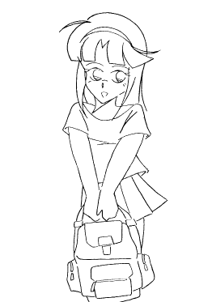
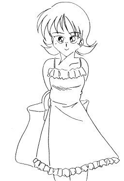
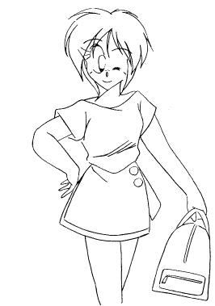

わたし・・・、ぼくは去年の秋まで「川村高志」という男の子だった。去年の秋、ぼくは病気で死んでしまった。しかし、ぼくの意識と記憶が電気信号に変換されて今の「わたし」の身体に“移植”された。
だけど、ぼくが“移植”されたのは叔父が勤めている会社で研究中の人間サポート用ロボット（人工人間）の少女の身体だった。
男性型ロボットは人型にしないで機能重視の機械にした方がいいので、女性型しか研究していないのでぼくは女の子の身体に“移植”されたのだった。しかし、人間サポート用ロボットといっても、今のぼくの身体の型はDNAレベルから人間とまったく同じ。しかも、それゆえにコスト等の問題で研究中止に なった。そこで叔父と開発主任のマスターが開発記録を消去してぼくが普通の人間として生活できるようにしてくれたのだった。
女の子になったぼくは「川村志衣」と名前を変えた。そして、今年の春に引越しをして今の女子高に転校した。
転校そうそうゴタゴタもあったけど、親しい友達も出来た。
そして、今日から高校の同級生の女の子４人で泊りがけで海に行く事になった。

「志衣ちゃーん。美紀ちゃんがもう迎えに来る時間でしょ」そう言うお母さんの声が一階から聞こえた。
わたしは昨日すでに荷造りは終わっていたけれど、もう一度忘れ物がないか確認していた。
「はーい。今、準備終わったところ」
と答えた。そして、
「よし、準備完了！」と心の中でつぶやいて、中身のいっぱい詰まったバックをポンとたたいた。
そして、わたしは２階にある自分の部屋から荷物をもって出た。そして階段を降りると玄関にはお母さんが待っていてわたしに声をかけた。
「気をつけてね」
「はい」
「行ってらっしゃい。高志」
「うん」
そう言って僕はうちの玄関を出た。
外はまだ午前９時を過ぎたばかりなのにじりじりとする日差しがさしている。
「今日も暑くなりそう・・・」とわたしがうちの玄関の前で考えていると
 「シッイちゃーん。おはよー」
「シッイちゃーん。おはよー」と元気のいい声が聞こえた。
「おはよう。美紀ちゃん」
彼女は「小笠原美紀」ちゃん。わたしが今通っている女子高に転校してすぐに友達になった、わたしの一番親しいお友達。 転校したてで右も左も分からないわたしの世話をよくみてくれた。美紀ちゃんのおかげでわたしの新しい学校生活に すんなり馴染む事が出来た。
そして、美紀ちゃんも今回の旅行のメンバーの１人でわたしのうちまで迎えに来てくれる事になっていたのだった。
「いよいよ今日からお待ちかねの旅行だよ。志衣ちゃんは忘れ物は無いかなー」
「うん。今朝、もう一度確認したから大丈夫」
「よーし。それじゃあ、行こうか!」
わたし達は他の２人との待ち合わせ場所の駅に向かって歩き始めた。
わたしの家は新興住宅街の一角にある。ちなみに美紀ちゃんの家も同じ住宅街の中にある。 わたしと美紀ちゃんはうちから駅までつづく住宅街の中の道を歩いている。
「そうそう、志衣ちゃん。忘れ物と言えばあたしは大変だったんだよー」
と美紀ちゃんはわたしに話し掛けた。
「大変って、何かあったの？」
「聞いて、聞いて。今日の朝ね・・・」
私が聞き返すと美紀ちゃんはそう話しめた。その時、美紀ちゃんから後ろから近づいてくる来る人にわたしは気が付いたけど美紀ちゃんは話す方に一生懸命で気づいてないみたいだった。
「今日の朝ね、うちをでてからママがあたしを呼ぶのよ。何かと思ったらあたし・・・電車の切符をうちに忘れて来ちゃった。 あたしがそんな事あったからさっき志衣ちゃんに忘れ物は無いかなーと聞いたんだ」
と言い終わった時、美紀ちゃんは後ろから声をかけられた。
「川村さんはあなたみたいに、おっちょこちょいでは無いですよ」
と言われて振り返る美紀ちゃん。わたしは美紀ちゃんに声をかけた人物に挨拶した。

「おはよう。春日さん」彼女は「春日玲子」さん。わたしの女子高のクラスメート。転校当初は彼女とわたしはそりがあわなかった。春日さんは大病院の一人娘で 両親に何不自由無く育てられた為、悪く言えばわがままになってしまいプライドも高くなってしまった。その為、親しい友達もつくれないでいたが、 本来やさしい娘なのは彼女の行動でうすうす感じていた。そして、ある事件のあとは わたしは自分の秘密を彼女に話し、春日さんはわたしに心をひらいてくれた。今ではわたしにとって春日さんは大切なお友達のひとり。
「おはようございます。川村さん」
春日さんがわたしに向かって微笑みながら言った。始めて会った時彼女は肩肘をはっている様に感じたが、今ではこの様に自然な微笑みをわたしに見せてくれる。
「ちょっと春日さん。今何か言わなかった？」
とは先に声をかけられた美紀ちゃん。ちょっとほっぺたをふくらませて言ったが春日さんは平然と
「あっ小笠原さん、おはようございます。ところで川村さん、学校以外で会うのは始めてですけど・・・。私服姿もかわいいですね」
春日さんは始め美紀ちゃんに向かって言ってたが途中からはわたしに言っていた。
「ありがとう。でもそう言われるとちょっと恥かしいな」
わたしも自分が女の子なのには慣れてきたけど、面と向かってそう言われると気恥ずかしく感じて何も言えないでいると美紀ちゃんが
「春日さんは志衣ちゃんの私服姿見るの始めてなんだー。・・・志衣ちゃん、この前のお買い物に行った時のワンピースもかわいかったよ。 そうそう、そう言えばその時買ったビキニちゃんと持ってきたよね？」
美紀ちゃんはそうわたしに言ってから春日さんを見た。
「えっ、川村さん。小笠原さんとショッピングに行ったんですか」
と言って春日さんはわたしを見た。
「うっうん。わたしの買い物につきあってもらったの」
「・・・なんでわたしは呼んでくれないの・・・」
春日さんと問いにわたしが答ると、彼女は下を向いて小声でなにか言った様だった。
「えっ、春日さんなに？。よく聞こえなかったんだけど」
「何でもありません！」
と、わたしは春日さんに聞き返したがちょっと怒った風に返事をされてしまった。
「そう言えば春日さん。あなたとは駅で真子と一緒に合流するんじゃなかったけ？」
と美紀ちゃんが春日に言った。言われてみれば、春日さんとは駅で合流するはずだった。
「だって・・・」
春日さんはそういったん言葉を切って、うつむきながら小声で言った。
「川村さんと早く会いたかったんだもん。夏休みに入ってからずっと会えなかったから・・・」
「春日さん・・・」
そううつむく春日さんにわたしが声をかけた時に、
「えー！？。志衣ちゃんと春日さんはそういう・・・あぶない関係だったの！？」
と美紀ちゃんが驚いた「風」な口調で言った。
「そっそんなんじゃありません。わたしにとって川村さんは大切なお友達で・・・、それで・・・」
春日さんは耳まで真っ赤にして本気で反論している。
「えー、そうなのー。ホントかなー」
しかし美紀ちゃんはまだつづけて言ったのでわたしは、
「美紀ちゃん！たちの悪い冗談はそこまで。春日さん顔真っ赤にして困ってるじゃない」
「はーい、ごめんなさーい。そうそう春日さん、今日泊まるところ・・・」
と言って美紀ちゃんはもう違う話題で春日さんに話しかけていた。春日さんはまださっきの話題がひっかかって うつむきかげんだけれど、美紀ちゃんはケロッとして悪びれず春日さんに話しかけている。
春日さんも春日さんらしいけど、美紀ちゃんはホント憎めない性格をしてる。
「志衣ちゃん、何ひとりでぶつぶつ言ってるの？。はやく駅まで行こう。真子が待ってるよ」
「うっうん」
わたし達は改めて駅に向かって歩き出した。
そして、わたしたちは駅に到着して今回の旅行のメンバーの最後のひとりと合流した。

「おっまたせー、真子ー」と、ほんと元気な美紀ちゃん。
「おはよう、真子ちゃん」
「栗田さん、おはようこざいます」
とわたしと春日さん。
彼女は栗田真子ちゃん。彼女もわたしの通う女子高のクラスメートで美紀ちゃんとはもともと 仲がよかったそうだ。
「おはよう。美紀、川村さん、春日さん。待ち合わせ時間までまだ余裕あったけど、あたしひとりきりだから ちょっと不安になっちゃった・・・。あれっそう言えば春日さん、あなたも駅で合流するんじゃなかったっけ？」
「え、あっ、わたし・・・はやく川村さんと会いたくって・・・」
と、しどろもどろに春日さんは真子ちゃんに答えた。
「えっ何？、志衣ちゃんと春日さんは危ない関係？」
「美紀ちゃん！」
「ごめーん志衣ちゃん。ギャグよ、ギャグ。よく言うじゃない繰り返しはギャグの基本って。あっそうそう真子ー・・・」
と言って、美紀ちゃんは今度は真子ちゃんと話し出した。
「まったく、美紀ちゃんの奔放さにも困ったものね。ねえ春日さん」
と春日さんを見ると彼女は下を向いてブツブツ言っていた。彼女は美紀ちゃんの軽い乗りの冗談も本気で受け止めてしまっているようだ。 そこでわたしは春日さんの正面に立って彼女の両肩に手を乗せた。すると春日さんは顔を上げてわたしの顔を見たので、
「春日さん、何事も真剣に考えすぎちゃダメ。春日さんの性格だから冗談を素直に受け入れられないのは分かるけど」
とわたしが言うと春日さんは「フー」とひとつ深呼吸してからわたしに言った。
「そうですね。これまでこの意地っ張りなところで自分を追い詰めてきちゃったんですからね」
「うん」
とわたしが答えると春日さんは、
「それと川村さんもです。かわいいって言われたぐらいで顔を赤くしちゃだめですよ。実際かわいい女子高生なんですから」
「え、うっうん」
と答えたけどそう言われるとやっぱり恥かしい。
そうこうしてると真子ちゃんに声をかけられた。
「ほらっ、美紀はともかく川村さんと春日さんまで何ぐずぐすしてるの。さあ、そろそろ出発しましょう」
というわけでメンバー全員が揃い、わたし達女子高生４人組みの旅行が始まった。